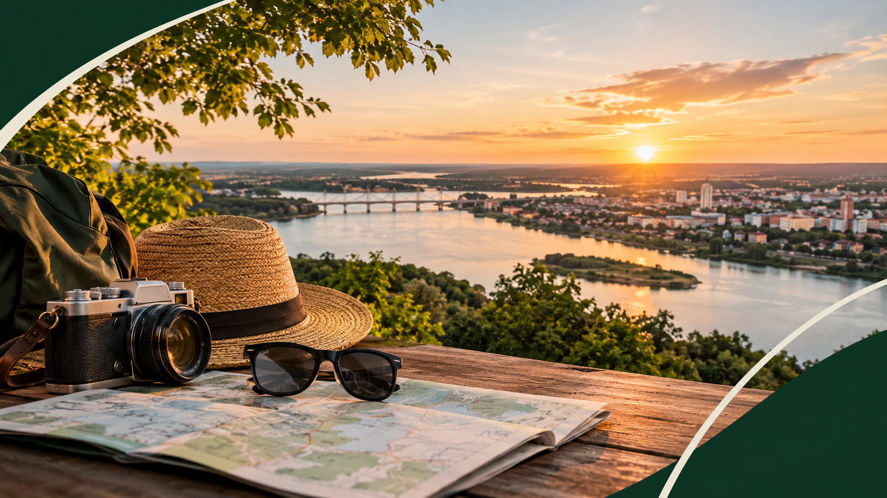
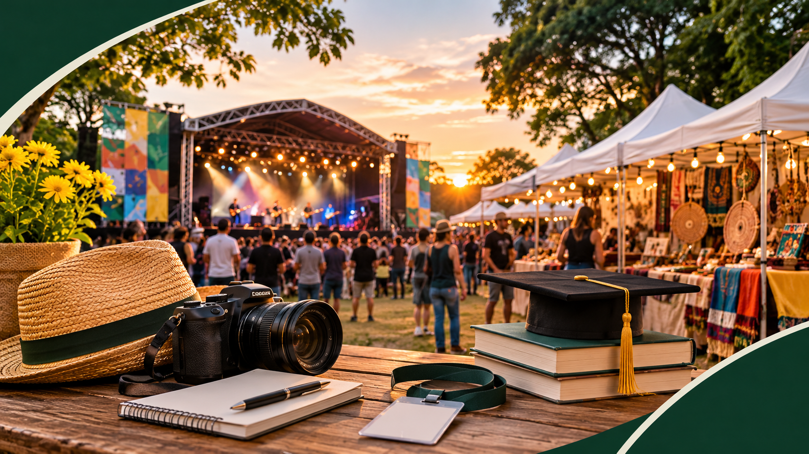

Noroeste Paulista — 14 municípios
Bem-vindo ao
Pantanal Paulista
Natureza exuberante, rios imensos e uma cultura hospitaleira
esperam por você no extremo oeste de São Paulo.
Sobre a região
Uma paisagem que se assemelha ao Pantanal Mato-grossense
Banhados pelo rio Tietê, os 14 municípios do CIENSP compartilham fauna, flora e clima únicos no interior paulista. Grandes áreas alagadas, rios como o Paraná, o Aguapeí e o São José dos Dourados compõem cenários de beleza rara — com praias, pesca, esportes náuticos e natureza exuberante a poucos quilômetros das cidades.
Parques, cachoeiras, capelas históricas, museus, comunidades culturais e uma culinária típica do interior completam um roteiro plural. O trade turístico é sólido: centenas de hotéis, restaurantes e pousadas prontos para receber você.
Conheça os destinosExplore a região
Escolha uma categoria e mergulhe no que o Pantanal Paulista tem a oferecer

Roteiro
Descubra
Municípios, mapas, onde ficar e onde comer na região
Ver destinosAtividades
Experiências
Pesca esportiva, esportes náuticos e contato com a natureza
Ver experiências
Agenda
Eventos
Feiras, festivais culturais e cursos ao longo do ano
Ver agendaNegócios
Para Empresas
Parcerias estratégicas e oportunidades de investimento
Saiba mais